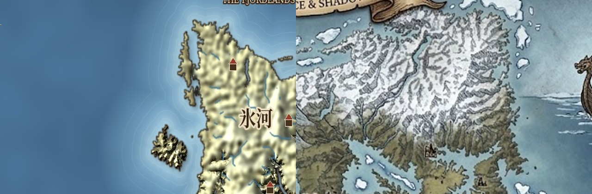

標高から稜線の細い線を引く試作(プログラム)
概要: ユーザーの指摘「積雪の描写がぼやけている。細い稜線を書いていないのは決定的な欠陥」を受け、標高データ(滲んだ地図)から稜線を抜き出し、その線と、斜面に沿った細い線を引く処理を作りました。世界6の雪原には、稜線と枝の尾根の線が出て、Geminiの描き方の性格に近づきました。ただし線の数が少なく、Geminiの密な平行線には届いていません。世界7ではほとんど見えません。
Geminiの描き方の確認(世界6の雪原)

左=私の前回(ぼかしのみ) / 右=Gemini。Geminiは白い雪面に、稜線とその枝に沿った灰色の細い線を一本ずつ引いている。斜面の向きは線の密さで示している。山の峰の線も、描き方は同じ(私の見立て)。
今回(左=今回の拡大 / 右=Gemini)

全体(左=前回 / 中=今回 / 右=Gemini)


やったこと
- 標高の「尾根らしさ」(凸の曲がり具合)を求め、高い所だけ強い所を細い線に痩せさせて稜線にした。
- 稜線から、下り坂の向きへ細い線を引いた(光の当たらない斜面は長く多く、当たる斜面は短く少なく)。
- 氷河(世界6の北部)は白を強め、前回のなめらかな面にまとめる処理は氷河には掛けないようにした(掛けないと黒いまだらが出るため、結局は元に戻した)。
目で見た評価(私の印象。判断はユーザーに)
- 近づいた点: 世界6の雪原に、稜線から枝分かれする暗い線が出た。白い面はぼやけた塊から、線のある雪原に変わった。
- まだ違う点: 線の数が少なく、枝分かれの木のように見える。Geminiは短い平行線を密に並べて、斜面の向きと明暗を出している。世界7は稜線の線がほとんど見えない。三角の峰の線は、まだ稜線とつながっていない(前のまま)。
限界・未確認
- 3枚の目視のみ。数字での評価はしていない。
- 線の数・長さ・強さの値は私が試して決めたもの。世界ごとに変えている。
- 世界5・7のGeminiの山でも同じ描き方かは、拡大で一部しか確かめていない。
- 標高は滲んだ地図なので、細かい稜線は出ない。
コード: ridge_gen.py(稜線と線)/gstyle7_gen.py。